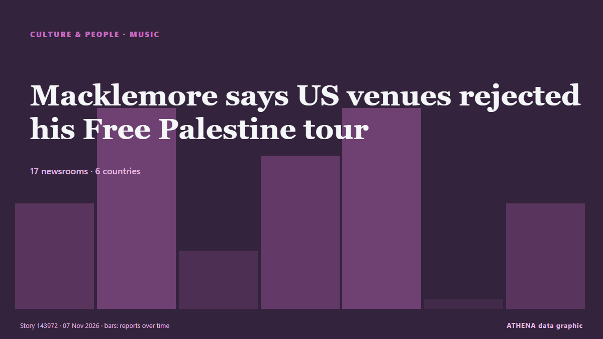

Cultura, personas y estilo de vida
PatrocinadoPresentado por  Cybernetics and Artificial Intelligence Lab Welcome to the Cybernetics and Artificial Intelligence Laboratory, established at the Department of Business Administration of the National and Kapodistrian University of Athens. The lab is headed by Professor Dimitrios Thomakos. The lab aims to do research that can be published in top venues. Our research uses tools and methods of Artificial Intelligence, and lies in the following areas: - Forecasting - Decision making - Cyber security - Finance We are always looking forward to collaborating with exceptional students!
Cybernetics and Artificial Intelligence Lab Welcome to the Cybernetics and Artificial Intelligence Laboratory, established at the Department of Business Administration of the National and Kapodistrian University of Athens. The lab is headed by Professor Dimitrios Thomakos. The lab aims to do research that can be published in top venues. Our research uses tools and methods of Artificial Intelligence, and lies in the following areas: - Forecasting - Decision making - Cyber security - Finance We are always looking forward to collaborating with exceptional students!
Los titulares se muestran en inglés, tal como se publicaron.

MúsicaMacklemore says US venues rejected his Free Palestine tour
Macklemore says nine US venues, including Madison Square Garden, refused to host his Free Palestine tour, following his criticism of Israel's war on Gaza. de The New Arab
| 25 oct | 6 |
|---|---|
| 26 oct | 52 |
| 27 oct | 72 |
| 28 oct | 75 |
| 29 oct | 78 |
| 30 oct | 88 |
| 31 oct | 54 |
| 1 nov | 50 |
| 2 nov | 100 |
| 3 nov | 119 |
| 4 nov | 92 |
| 5 nov | 126 |
| 6 nov | 61 |
| 7 nov | 10 |
As African Fashion Industry Pushes for $500m Economy
Stakeholders in the African fashion industry are pushing for an estimated $500 billion fashion economy at the ongoing Creative African Nexus taking place in Lagos, writes Charles Ajunwa Since… de ThisDay (Nigeria)
Former US senator Jay Rockefeller dies at 89
Rockefeller came from one of the nation's richest families to spend a half century in public service in one of the poorest states. de PBS NewsHour
Italian chef sacked for refusing to put pineapple on pizza, says it insulted his culture
An Italian chef in Australia has lost an unfair dismissal claim after being sacked for, among other workplace issues, refusing to serve ham and pineapple pizza, describing the topping as an insult to… de Vanguard
‘The Legend of Zelda: Ocarina of Time’ Drops for Nintendo Switch 2: Here’s Where to Shop the Remake Online
Starting on Thursday, Nov. 5, you can revisit Hyrule with the new Zelda remake. de Billboard
Pope Leo XIV receives Bob Dylan at Vatican
(ANSA) - ROME, 04 NOV - Bob Dylan met Pope Leo XIV at the Vatican Wednesday. de ANSA English
2,800-Year-Old Siberian Sacrificial Tomb Reveals Earliest Known Evidence of Cannabis Intoxication
Thousands of years ago, in what is now Siberia, a mysterious ancient culture laid some... de ScienceAlert
2 dead in shooting at Citibank complex in U.S. Florida: authorities
Sheriff Chad Chronister said the shooting is believed to be ‘a targeted incident’ de The Independent
Amazon adds Uber Eats delivery perks for Prime members
The partnership brings restaurant orders into Amazons shopping app By Kristen Dalli of ConsumerAffairs November 6, 2026 Prime members can now get $0 delivery fees on qualifying Uber Eats restaurant… de Consumer Affairs
Martine Rose is the New Creative Director of Balenciaga
Martine Rose will succeed Pierpaolo Piccioli at Balenciaga. de Vogue
India's 'Lord of the Rings': filmmakers hail 'Ramayana' epic
Featuring Bollywood stars Ranbir Kapoor and Yash, the multi-million epic brings together Indian storytelling and Hollywood expertise in a bid to captivate audiences worldwide. de CNA (Channel NewsAsia)
5,000-year-old bread remains unearthed at mound in western Türkiye
8 pieces of bread charred in fire around 5,000 years ago have survived to present day, attracting visitors to local museum. de Anadolu Agency (English)
Keira Knightley is ‘utterly mesmeric’, says Black Doves co-star Andrew Buchan
Buchan has reprised his role as Knightley’s on-screen husband in the Netflix thriller. de Evening Standard (London)
Rush Announce Sphere Residency
The five-date Elevate From the Norm set kicks off in May. de Pitchfork news
Danielle Steel’s ‘The Whittiers’ In The Works As Series From Cottage Industry Entertainment & Fox Entertainment Studios
Former Hallmark Media executive Lisa Hamilton Daly and Warner Bros. and Legendary executive Alysia Cotter Thomas launched their own production company, Cottage Industry Entertainment, last year with… de Deadline
Greece Welcomes EU’s First Sustainable Tourism Strategy
The Greek tourism industry association says the new framework offers an opportunity to strengthen competitiveness, develop workforce skills and ensure tourism benefits are shared more fairly with… de To Vima (English)
Book about Alexander the Great wins Baillie Gifford Prize for non-fiction
It is the first time a title covering ancient history has won the prize since the award was launched in 1999. de Evening Standard (London)
2026 Prix Goncourt: France's prestigious literary prize awarded to Philippe Jaenada
France’s prestigious literary prize “The Goncourt” was awarded on Monday to writer Philippe Jaenada. de France 24 English
Gamers set for Zelda remake to hit the shelves
Ocarina Of Time has already garnered widespread praise. de The Straits Times
‘The Odyssey’ Takes Imax to Biggest Quarterly Revenue to Date
After a record-breaking summer season, Imax swung to its best-ever revenue and profits during the third quarter of 2026. de Variety
'Godzilla Minus Zero2 gets loud applause at Tokyo film festival
Since the release of Godzilla Minus One in 2023, things have gotten a bit crazy... de Empire
Take care not to demonise AI, says music industry boss
Guy Moot said he had not ‘seen huge AI hits yet’. de The Irish News (Belfast)
Texas’ New Attorney General Nathan Johnson Is a Former ‘Dragon Ball Z’ Composer
Johnson composed the musical scores for 67 episodes and five movies. de Billboard
Oman promotes tourism at World Travel Market
LONDON: The Sultanate of Oman, represented by the Ministry of Heritage and Tourism, is participating in the World Travel Market (WTM) in London, which runs until Thursday.The Sulta... de Oman Observer
Bethel SDA Osu hosts third edition of ‘The King Is Coming’ concert
Bethel Seventh-day Adventist Church, Osu, will host the third edition of its The King Is Coming concert on Saturday, November 7, 2026, under the theme “Babylon Is Fallen”. de MyJoyOnline
CMAT releases Christmas song with Elton John
Elton John has teamed up with CMAT for a new version of his festive hit single Step Into Christmas. de RTÉ News
Alan Cumming and Shirley Henderson take Pitlochry Festival Theatre hit to New York
Series creator Russell T. Davies and Cumming tells IndieWire all about that devastating finale and why this role made the actor's career. de IndieWire
4 bomb-threatened planes prepare to land in Prague: Czech police
The sandwich chain’s new regional partner plans 300 openings across five countries, with a Prague restaurant expected next year. de Expats.cz
ASADOR ETXEBARRI IS NAMED NO.1 IN THE LIST OF THE 50 BEST RESTAURANTS 2026
This Wednesday, Oct. 4, the The 50 Best Restaurants gala will take place in Lima, Peru. de Colombia One
Tengku Puteri Zainah, former wife of Najib, dies at 70
KUANTAN, Nov 5 — Tengku Puteri Zainah Tengku Eskandar, the mother of Pahang Investment, Industry, Science, Technol... de Malay Mail
Greenpeace deploys boulders to block trawling in sea protected for porpoises
Celebrities have added their names to the boulders which aim to protect the Southern North Sea Marine Protected Area. de Evening Standard (London)
At ‘China’s Hollywood,’ visitors become stars as consumers spend more on experiences
Since the experience launched in August, Hengdian World Studios said more than 2,000 people had taken part, with bookings full on most days. de CNA (Channel NewsAsia)
Christie’s debut Abu Dhabi sale totals $8.94 million, setting nine auction records
Christie’s first fine art auction in Abu Dhabi totalled $8.94 million on Sunday, delivering the auction house’s highest total for an evening sale of modern and contemporary Middle Eastern art in more… de The National
PM Mitsotakis in Discussion With Photographer Platon Says Elections Cannot Be ‘Bought,’ Regardless of Wealth
Artificial intelligence, the power of technology and the need for oversight were at the centre of a discussion between Prime Minister Kyriakos Mitsotakis and internationally renowned photographer… de The National Herald